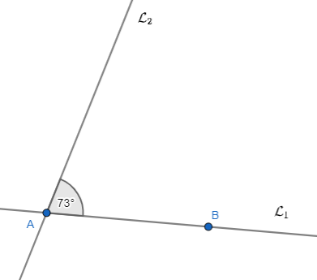
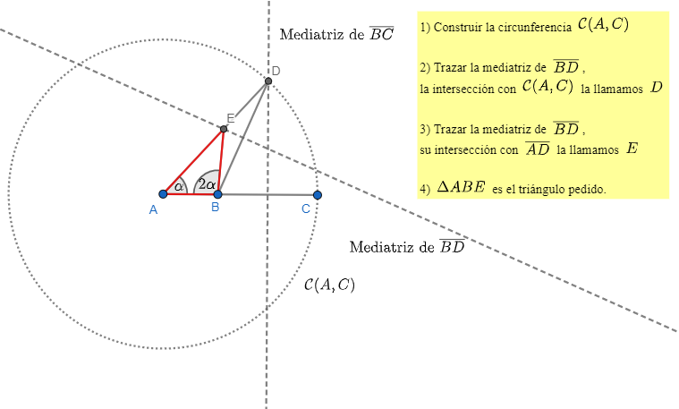

Pensar antes de actuar, con esto digo tratar de hacer un bosquejo y análisis a mano de como debería quedar
la figura y que plan van a llevar a cabo para completar la figura con regla y compás con las herramientas que ya más o menos dominan.
Problema
Dado un segmento \(\overline{PQ} = 1\), construir un paralelogramo \(\overline{ABCD}\) tal que
- \(\overline{AC} = \sqrt{2}+1\)
- \(\hat{B} = 105^\circ\)
- \(C\hat{A}D = 30^\circ\)
Problema
Dado un segmento \(\overline{PQ} = 1\) construir un triángulo iscoceles \(\Delta ABC\) tal que
\(\overline{AC} = \overline{CB}\), \(\hat{C} = 75^\circ\) y \(\overline{AC} = 2\sqrt{3}\).
Problema
Dado un segmento \(\overline{PQ} = 1\) construir un triángulo isósceles tal que \(\overline{AB} = \overline{CB}\),
\(h_C = \frac{3\sqrt{2}}{4}\) ( \(h_C\) es la altura desde \(C\)) y \(\hat{C} = 30^\circ\). Si ahora les digo \(h_B = \frac{3\sqrt{2}}{4}\) en vez de \(h_C = \frac{3\sqrt{2}}{4}\) el problema
es mucho más fácil. Traten también con esa variante que debería ser más sencillo.
Problema
Dado un segmento \(\overline{PQ} = 1\), construir un paralelogramo \(\overline{ABCD}\) tal que
- \(\overline{AC} = \sqrt{5}\)
- \(\overline{DB} = \frac{\sqrt{2}}{2} \)
- \(B\hat{A}C = 15^\circ\)
Problema
Dado un segmento \(\overline{AQ}\), construir un triángulo equilátero \( \Delta ABC \) tal que \( \overline{AQ}\) es la altura del triángulo.
Problema
Dado el segmento \(\overline{RQ}\), construir un triángulo \(\Delta ABC\) tal que:
- \(\hat{A} = 60^\circ\)
- \(\overline{AB} = 4\overline{RQ}\)
- \(\overline{AC} = 3\overline{RQ}\)
Problema
- Dado \(ABCD\) un rectángulo de base mayor a su altura, construir un cuadrado que tenga la misma area que el rectángulo.
- Dado \(\Delta ABC \) un triángulo de una base mayor a su altura correspondiente, construir un cuadrado que tenga la misma area que el triángulo.
Problema
Sean dos rectas \(\mathcal{L}_1 \) y \(\mathcal{L}_2\) cuya intersección es el punto \(A\). Sea \(B\) en la recta \(\mathcal{L}_1 \). Se sabe que
\(\mathcal{L}_1 \) y \(\mathcal{L}_2\) forman un ángulo de \(73^\circ\). Entonces:
- Construir triángulo \(\Delta ABC\) tal que \( \hat{A} = 28^\circ \) y \(\overline{BC} = \sqrt{2}AB \)
- Construir triángulo \(\Delta ABC\) isósceles tal que \(\overline{BC} = \overline{AC}\) y \(\hat{C} = 153^\circ \)
Aquí abajo está la figura dada:

Problema

Supongamos que \(\overline{AB} = a \in \mathbb{R} \) y que el área de \(AB'C' = b \in \mathbb{R}\). Además:
- \(\overline{AB} = 3\overline{AC}\)
- \(\overline{C'C} = \frac{7}{9}\overline{AB}\)
- El area de \(\Delta AB'C' = b\)
- \(\overline{D'D} = \frac{4}{3}\overline{AC'}\)
1)¿Cuanto vale el área de \(\Delta ABC\) en términos \(b\)?
2)¿Cuanto mide \(\overline{CB}\) en términos de \(a\) y \(b\)?
Problema
Supongamos que nos dan el segmento \(\overline{AB}\), dos numeros \(x\) e \(y\) y dos segmentos que miden \(x\overline{AB} \) e \(y\overline{AB}\) respectivamente.
- Construir un segmento que mida \((x \cdot y) \overline{AB} \)
- Construir un segmento que mida \((\frac{y}{x}) \overline{AB} \)
Problema
Sea \(\mathcal{C}\) una circunferencia dada.
- Encontrar su centro y llamarlo \(O\)
- Construir un triángulo equilátero tal que todos los vertices de este estén sobre la circunferencia.
Problema
Sea \( \Delta ABC \) un triángulo dado. Construir uno semejante \( \Delta PRQ \) tal que \(\text{Área}(\Delta PRQ)/\text{Área}(\Delta ABC) = \frac{1}{3} \)
Problema
Dada una unidad de medida \(\overline{AB} = 1\)
1) construir un dodecágono regular de lado \(\sqrt{5}\) (el dodecágono tiene 12 lados)
2) Construir un dodecágono regular de radio \(\sqrt{2}\)
3) Sean \(p_1\) y \(p_2\) dos vértices de una dodecágono regular. Sea \(O\) el centro de la circunferencia donde se inscribe
el dodecágono. Dado \(\overline{OH}\) la altura de \(\Delta p_1p_2O\), construir el dodecágono.
Problema
Dada una unidad de medida \(\overline{AB} = 1\)
- Construir un rombo con una diagonal de medida \(\sqrt{2}\) y área \(\sqrt{6}\) (Recordar que el área es \(\frac{d\cdot D}{2}\))
- Construir un rombo \(PQRS\) de lado \(\sqrt{7}\) tal que \(\hat{P} = 120^\circ\)
Problema
Dado el segmento \(\overline{AD}\) construir un cuadrilátero \(ABCD\) tal que:
- \(\hat{D} = 90^\circ\)
- \(\overline{AD} = \overline{AB} = \overline{CD} \)
- \(\overline{BC} = \frac{2}{3}\overline{AD}\)
Problema
Dada una unidad de medida \(\overline{AB} = 1\), construir un triángulo equilátero \( \Delta PQR \) tal que
su área sea \( \frac{1}{2\sqrt{3}} \)
Problema (un poco más difícil)
Dado un Cuadrado \(ABCD\), construir un triángulo equilátero del mismo área
Problema (más difícil!)
Se nos da un segmento \( \overline{AC} \) y un punto \(B\) en tal segmento. Construir un triángulo tal que \(\overline{AB}\) sea un lado, \(\overline{BC}\)
sea la suma de los otros dos lados y tal que \(\hat{B} = 2\hat{A}\).
Lo ideal sería que jueguen un poco con el problema hasta encontrar propiedades interesantes, suponer que ya lo tienen resuelto
y ver que pueden averiguar. Desde ya es un problema difícil de encontrar su solución. Igualmente les dejo los pasos y vean si pueden descubrir por qué la construcción funciona:
>
